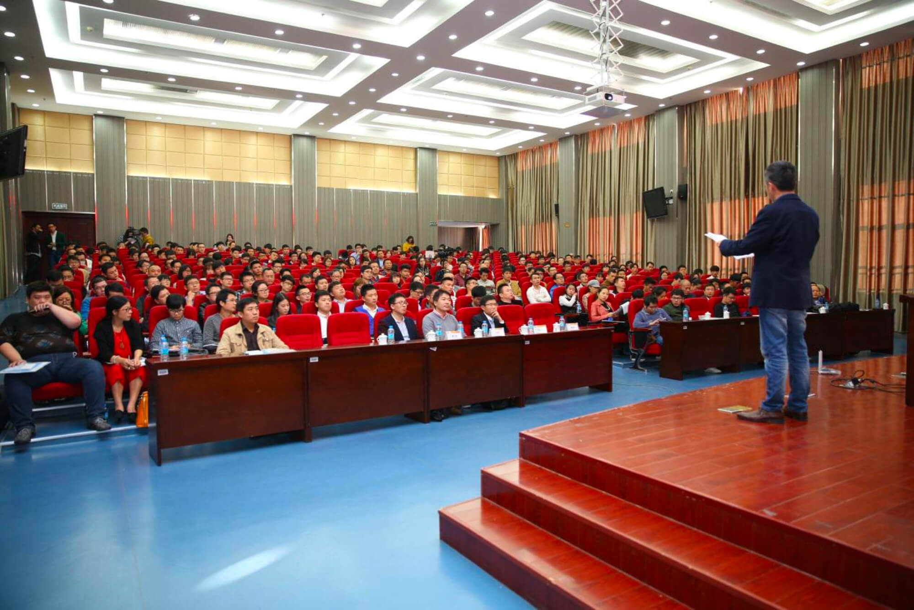
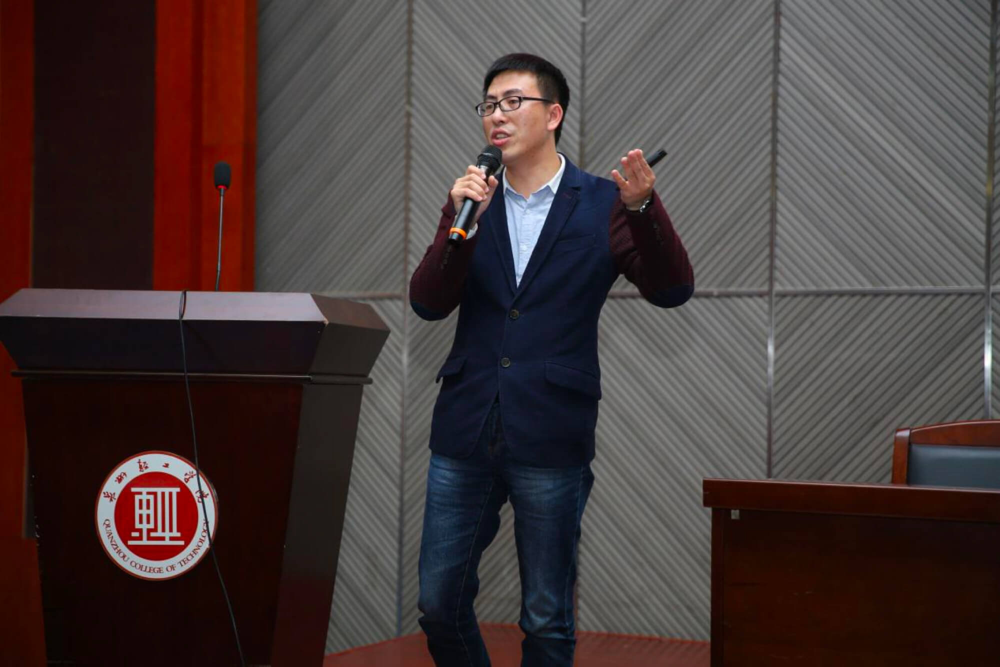

首届“海峡杯”创新创业大赛赛前培训圆满落幕
016-09-09
12月9日下午，由晋江市人民政府主办、深圳市南山区科技创业服务中心、晋江市委人才办、晋江市科技局、人社局、三创园、洪山文创园和清控科创（晋江）科技园管理有限公司承办的首届“海峡杯”（晋江）创新创业大赛赛前培训在晋江市泉州轻工学院行政楼学术报告厅举行。比赛邀请到深圳市红树谷创业投资有限公司CEO马越鹏先生，坚果创客帮基金合伙人廖文彬先生出席并作赛前主题讲座，吸引了大赛参赛者和慕名创客近300人，将与会现场围得水泄不通，更是踊跃举手互动。

蔡金星主任继续介绍说，晋江不仅有历史深度，有人文温度，还有发展速度：经济实力连续15年居于全国第5-7位，连续22年领跑福建，聚集46家海内外上市企业，打造了制鞋、纺织服装、建材陶瓷等7个超百亿产业集群。近年来投入人才资金2.5亿元，先后引进了中科院海西研究院等7家国字号科研机构，并且市财政设立5亿元政府产业创投引导基金，创业团队可获得最高1900万元的扶持资金。
最后，蔡金星主任对全球想要实现“老板梦”、“创业梦”的创业菁英们发出诚挚的邀请，依托“海峡杯”创新创业大赛这个开放的平台，落户晋江。因为晋江浓厚的创业氛围、雄厚的产业集群优势、活跃的资本市场和政府的全力支持，必将助推各位创业者圆梦晋江。
培训的第一部分由深圳市红树谷创业投资有限公司CEO马越鹏先生为大家带来《怎样撰写商业计划书》。作为一名资深投资人及创业大赛评委，培训会上他不仅为大家解读了投资行业的秘密——投资人都是以创业的角度来投资，所以创业者需要以投资的角度来创业，以及投资人首要关注的创始人团队，其次才是项目本身……还带了颠覆性的商业计划书另类逻辑，并详细说明了不同类型企业路演PPT的注意事项、路演技巧。

据了解，“海峡杯”（晋江）创新创业大赛自10月17日正式启动海选，截止报名，共有655组报名大赛，其中633个项目成功提交，报名项目不仅覆盖国内创新力活跃的城市，还吸引了许多海外项目参赛，其中北美34组，德国16组，日本5组，英国3组，加拿大、新加坡、法国各2组，澳洲、韩国、瑞典各1组，涉及多个发达国家，占总报名数的比例高达12.6%。
经过近日的专家筛选，晋江赛场共有325个项目脱颖而出，获得参加海选赛、角逐决赛名额的资格。为给省外参赛者提供更为便捷的参赛途径，大赛组委会还在报名参赛较为集中的北京、杭州设置了分赛场。
江海选赛赛场定于12月13日－15日于晋江市三创园举办，分设TMT、智能制造、文化创意、综合组、远程视频组5个组别，届时将在赛后结合北京赛场、江浙赛场的比赛结果，挑选出共40个项目参与初定于本月月底在晋江举办的决赛。另外，海选比赛分项目初创组和企业成长组两个组别，形式采取“6+9”模式：参赛项目展示6分钟，回答评委提问9分钟，由创投机构、企业家、专家学者，就创新性、成长性、市场前景、管理团队、现场表现现场打分。
需特别提醒海选赛参赛者的是，参赛人员可在本次培训结束后，结合培训老师的指导，将比赛PPT及商业计划书进行完善后，于本月11日24时前打包压缩并发送到指定官方邮箱：jjchuang2016@163.com，文件夹命名格式为“省份+项目名+报名人姓名”。